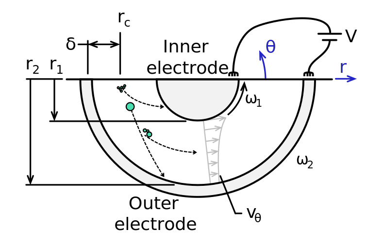
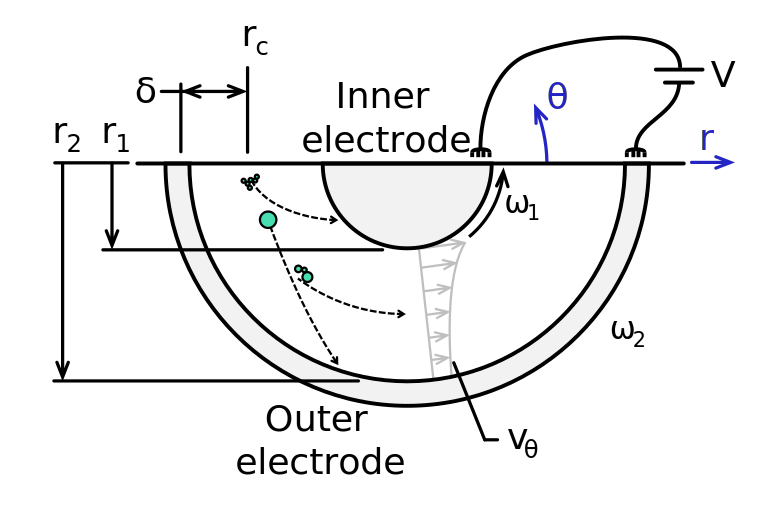

tfer-pma.
A particle mass analyzer
transfer function
evaluator.
 



This web app examines the transfer function of particle mass analyzers, like the centrifugal particle mass analyer (CPMA) or aerosol particle mass analyzer (APM). We refer the reader to Sipkens et al. (2020) for more information on the underlying analytical transfer functions. A supporting repository with code to evaluate the PMA transfer functions is available here — including Matlab, Python, and Javacsript versions. A separate Matlab version, which can be imported into larger projects is also available here (e.g., this package is imported into bidias).
APM (aerosol particle mass analyzer) conditions are achieved when ω2/ω1 = 1. Typcialy CPMA (centrifugal particle mass analyzer) conditions are achieved when ω2/ω1 = 0.9696. Another interesting condition occurs when doubling the length to 40 cm, a scenario that can (very, very roughly) approximate two devices in series. In this case, diffusion is much larger, resulting in smooth, Gaussian-like curves even for m* ≈ 5 fg with distinct charging peaks.
We note that Case 1S, following from the approach proposed Ehara et al. (1996), results in various anomalies. For example, in the default app settings, there is an anomaly for the z = 1 transfer function, which appears as a linear increase in the transfer function for m/m* > 2 (enable Case 1S below to see this). This artifact is a consequence of solving for the equilibrium raidus and demonstrates a limitation of that approach. Other anomalies include problems with calculating the uncharged (z = 0) contributions. The method is generally stable for the ω2/ω1 = 1, the case originally intended by Ehara et al. (1996).
The default view shows contributions from integer charge states z = 1 through 3. All cases correspond to uniform flow — for parabolic transfer functions see Sipkens et al. (2020). A few preset conditions:
- APM conditions
- CPMA conditions
- Ehara, Fig. 8c (uniform flow only)
- Olfert and Collings, Fig. 5a (Couette CPMA curve)
Visualization
Classifier and particle properties
Gopalakrishnan, z < 3
Setpoint
ω =
ω =
V =
Rm =
(
(